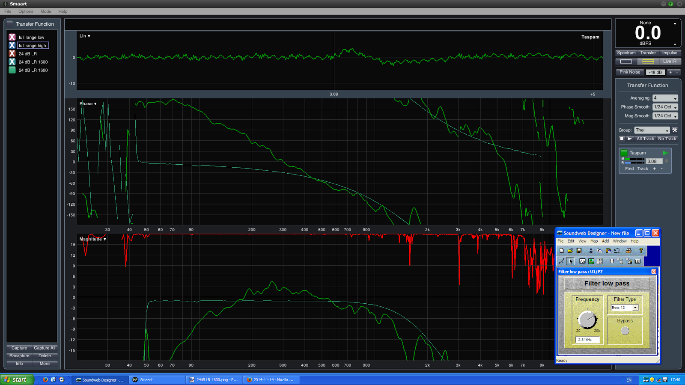
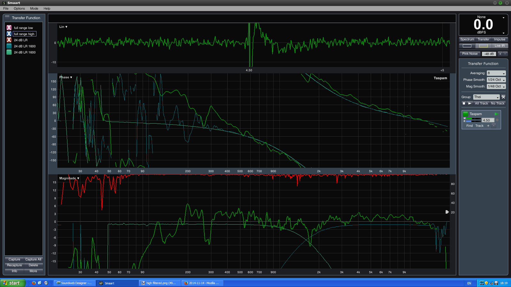

On the bench is a 12-inch horn-loaded cabinet, a measurement mic and a dual-FFT rig. The target is a 1600 Hz, 24 dB Linkwitz-Riley acoustic crossover, and the first question is whether the electrical filter alone gets us there.
Now that we have acquired a dual-FFT measurement tool and had some practice measuring, it is time to dive into actual system tuning.
Design goals
First we have to establish some design goals. I think there is no doubt that, initially, we go for a flat magnitude response. Sure, certainly in live audio there is a big preference for sloped responses — be it a smiley curve or, more seriously, a slope towards the sub end (upwards, that is ;). But imho this is part of a sound engineer's artistic input, in the same way as EQ-ing a system to his or her preference. Other people, with whom I don't always agree, have called this toning as opposed to tuning a system.
A slightly more complicated design goal is an even, controlled off-axis response as well. Why? Not only will there be (paying?) people listening off axis; anywhere you listen to music in enclosed spaces, there will be acoustics. So sound radiated off axis will eventually reach your on-axis ears too.
A target trace
One way to achieve this is the well-known Linkwitz-Riley crossover tuning — acoustically, that is. If we apply a 24 dB LR crossover in the electrical domain, does that necessarily give us an acoustic LR behaviour?
A simple trick to see what a desired 24 dB filter would look like in your measurement: just connect the output of your crossover to the measurement input, select a desired crossover trace and presto:

Here you have it: 1600 Hz / 24 dB crossover, LR style, as a target trace. Don't get confused by the out-of-band nonsense; no coherence there, so no viable measurement data. (Actually should have faded this; now where's that button in Smaart, hmm.)
Now let's see if we can take that measurement from the previous 12-inch horn-loaded cabinet and give it an LR alignment. Seems reasonable, hein? Now look closely and you will notice in the bottom corner the Soundweb setting: 2800 Hz / 12 dB Bessel! Didn't expect that to work out for an acoustic filter of 1600 Hz / 24 dB?


Aligning the horn
We can now continue to see if the 1-inch driver horn will combine in the same way. Remember, I am measuring everything with music, so at the same time I am listening to whether it sounds anywhere near OK.

Again, if you try to read the small figures: 2300 Hz / 12 dB Bessel! From the days I still had to do these things by ear, I have a real preference for Bessel filters; 25 years later this finally seems to make sense. ;) (Actually I am going to set up this cab with 18 dB Bessels, but these are not implemented in the SW9088.)
Final picture? The microphone is now further away, which is why things start to get more bumpy again. (For educational purposes, unfortunately also in the X-region; no, no, this is not a crossover artefact. ;)


Are we finished now? No, but this is a start. We can now start to compare this with different solutions. Am I cheating anywhere? No, but I'm not telling you the whole story. (See, this is my business, remember. ;) There is a lot more to be said about adjusting delay, applying EQ at the right places, etc. You can read between the lines, though...